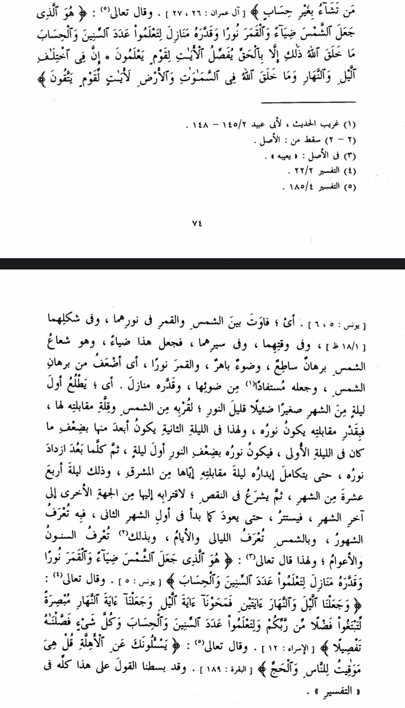

the answer is pretty simple it is in another Qūr’ānīc verse + tafsir of a sahabi
In Quran 17:12 “We made the day and night as two signs. So We made the sign of the night devoid of light,
and We made the sign of the day ˹perfectly˺ bright”
Al-Razy mentioned and authenticated the opinon that the moon and sun had same light but then Allah sent Jibreel
And it has no more light. It is also narrated from ibn abbas
حدثنا القاسم، قال: ثنا الحسين، قال: ثني حجاج، عن ابن جريج، قال: قال ابن عباس: كان القمر يضيء كما
تضيء الشمس، والقمر آية الليل، والشمس آية النهار، فمحونا آية الليل: السواد الذي في القمر
So we can understand it this way or the way it is reflected light
وإنما سمى الأول نورا والآخر سراجا، لأن نور القمر منعكس عليه من الشمس لاختلاف تشكلاته بالقرب والبعد عنها
NOTE. My own translation, so treat with care.
And the former [moon] was called nūr and the latter [sun] was called sirāj because the light of the moon is a
reflection from the sun that differs based on its proximity to the sun
— Bayān al-Ma'āni, Vol. 4, pp. 267 (Arabic only)
Some even elaborated about the topic by explicitly saying that the moon is intrinsically dark and that its luminance
is the result of the reflection of sunlight, e.g., Ibn 'Ashūr in At-Tahrīr wa at-Tanwīr 30/204 (Arabic only)
and Sayyid Tantāwi in At-Tafsīr al-Waseet 15/119 (Arabic only). As well as tafsir ibn kathir 36:37 that
I already showed
As well as many other translations who say that
Also check https://www.answering-christianity.com/ahmed_eldin/light_of_moon.htm
Also this is a source from NASA
about moon evolution or development when it had it's own light just like the sun and after it lost that
light by time
https://youtu.be/UIKmSQqp8wY
In Ibn Katheer’s book Al Bidaayah wan Nihaayah, this is what he mentions about these verses

That is, there is differing between the sun and moon in their light, in their type, and in their time,
and in their course, so He made this ‘Diyaa2’, and it is the beam / ray / radiation of the sun that is a clear
brilliance / evident brightness, and a dazzling light, and the moon [was made to be] ‘Noor’ as it is weaker than
the brilliance of the sun, and made it a utilisation of its (the sun’s) brilliant light (Daw’), and determined for it phases.
That is, it comes out on the first night of the month with small, minimal, low light, due to its proximity
to the sun with the limited / minor amount of exposure to it, and by this exposure it has its ‘noor’ ie light;
and for this in the second night it is further from the sun a fraction / portion of where it was in the first night,
so its ‘noor’ (“light”) is weaker / more impaired than what it was on the first night
Ibn Katheer goes onto explain the phases of the moon and some of the other ayaat to which he directs you to
his tafseer for greater detail.
This is what a commentator with no insight into modern science says. For all he knew, he could have very well
stated that as per the verse it does mention that the moon has its unique light - but no, he understood the meaning
of these verses, like all the other commentators, and still, with no knowledge of modern science or possession of technology,
he explicated that the moon’s “noor” is merely a derived light as a utilisation of the sun’s “diyaa’ “.
Moreover, this is not a fringe opinion either. Rather, this opinion is muhkam amongst the mufassireen, thus there
is no Ikhtilaaf with the comprehension and interpretation of this verse and the ulama even from way back then,
without having scientific insight, established that this is the true understanding of this verse. The scientific contentions
against 71:16 are thus frivolous.